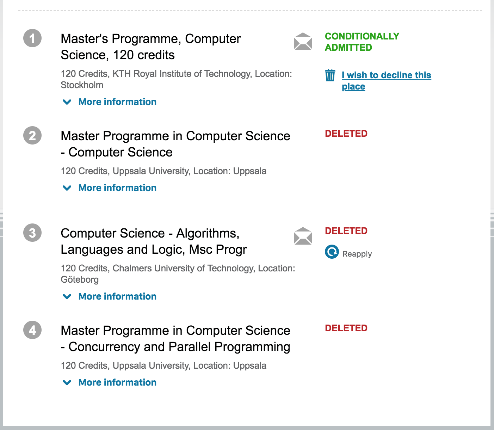
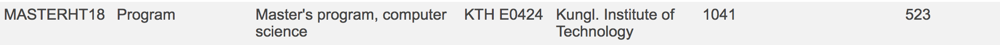
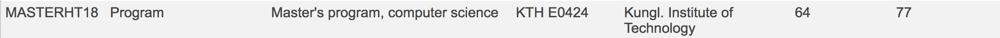
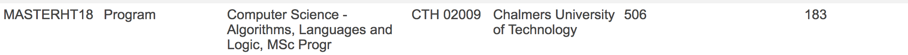
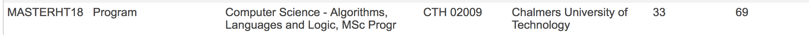
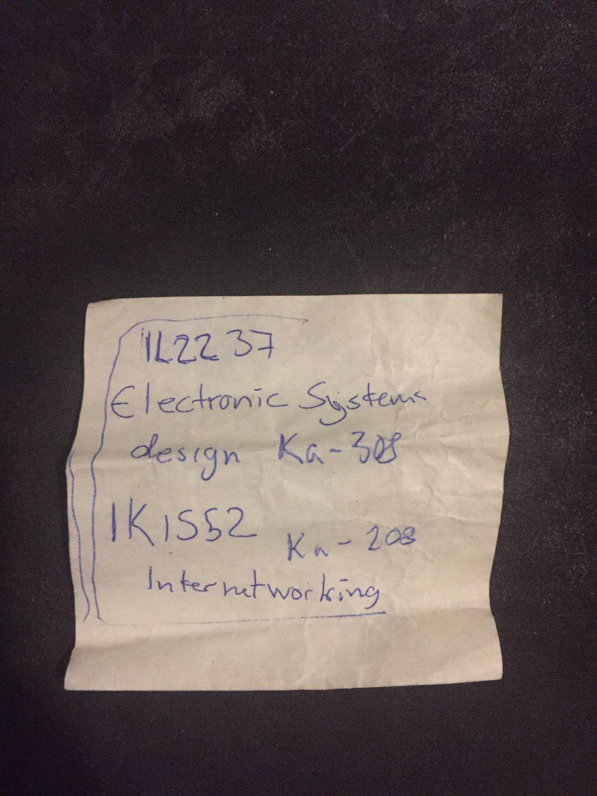
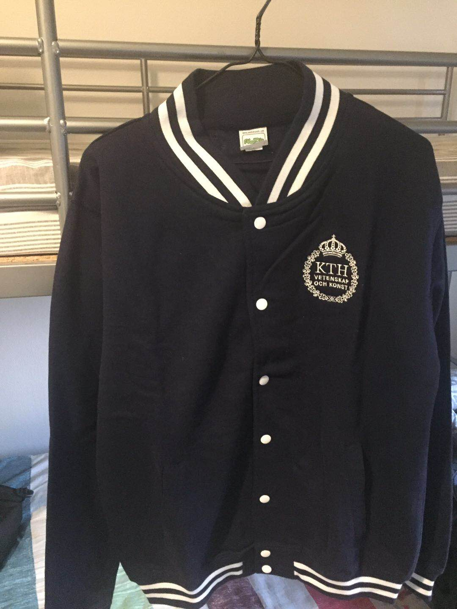
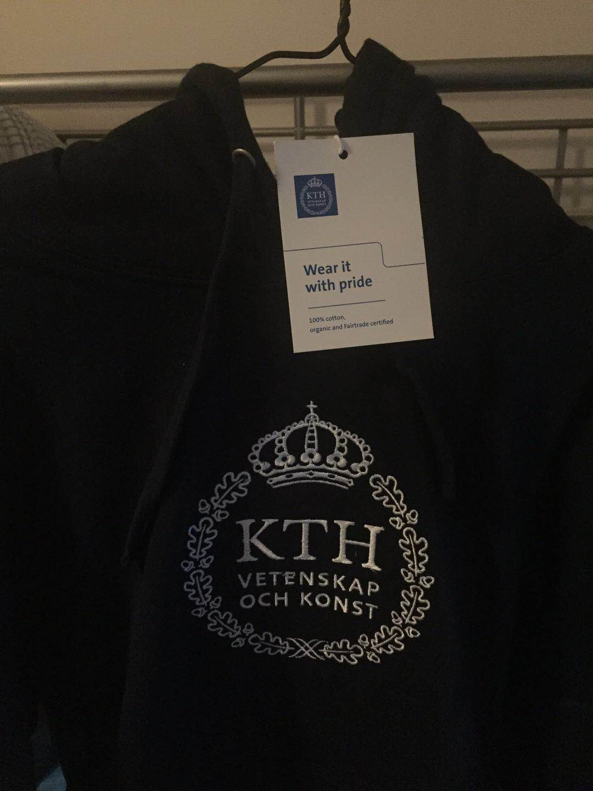

Apr 11, 2018

前段时间自己被KTH的CS Master录取了，感觉自己一年多来的努力终于得到了回报。回忆我自己申请瑞典研究生的过程，我觉得网上关于瑞典申请的信息并不丰富，大部分只是抄来抄去的过时信息而已，在这里我想写一些网上不太常见但是能帮助大家去瑞典留学的东西。
我还是说一下我的背景吧，我来自帝都某双非，很多专业都还是二本招生的那种双非，均分86。我知道这一点对于很多人来说是很inspiring的，因为我还记得一年多之前我在寄托上搜个帖子都要加个双非关键字的样子 :)
当然我在瑞典申请很重要的一点是我大四在瑞典交换，我的本科不怎么样，所以在瑞典交换的学校也是一所默默无闻的学校。但是这边的师资水平，其实是很不错的，至少完爆了我的本科。瑞典学校特别相信自己系统里的人，我交换时在这边拿了两封强推，其中一个推荐人在KTH当过postdoc，直接让我觉得瑞典录取没问题了。所以如果你真的交换过来了，一心冲着拿推荐信去吧，至少我在我推荐人的课上拿的都是满绩，连作业都是浮夸地用LaTeX写的。当然这个学校有他自己的问题，招来的学生水平参差不齐，方差太大，比我本科还大，管理上也会有一些问题，不过我还是在这里学到了很多东西。
其实瑞典每年都会把所有学校的申请数据公开的，今年4.6出的结果，我4.8看到数据已经公开了。数据可以在 statistik.uhr.se 上看到，下面我说下这个到底怎么用。
首先这个网站是瑞典语的，我使用Chrome的自动翻译将其翻译成英文，然后假设我要看KTH18年Master的录取情况，我需要选择Master18这个学期，并选择学校，Kungliga Tekniska högskolan就是KTH。注意上面的free text就是自定义搜索，问题是你需要用瑞典语来搜索，用英文是不行的。比如说你要搜Computer Science，你要先把它翻译成瑞典语datalogi，然后才能放到搜索框里。当然每个学校的Computer Science项目的瑞典语其实是不一样的，至少KTH的CS的瑞典语是datalogi。
搜索结果如下图所示，这里主要列出了项目的申请人总数与第一志愿的申请人数量，这两个数据很有用。这里先扯一下瑞典的申请系统，瑞典申请硕士是按志愿来的，一个人能填4个志愿，然后录取也是按顺序来的，如果四个项目你都能被录取，那么你会被录取到第一志愿，剩余的志愿会被删除。然后还有两点需要综合考虑：
我得出的结论就是，申请人总数并不能很好地反映这个项目竞争的激烈程度，考虑第一志愿的申请人数量应该是更好的选择，特别是要追求奖学金的人。
除了申请人数，还需要看录取人数，录取人数查看方法如下图所示，选择selection 1并选择Total number of admissions。图中admitted的就是被录取，reserved就是在waiting list上，瑞典的waiting list大部分时候都是另一种rejection，从图上可以看到waiting list的人数比admitted的人数还多是一件很正常的事 :)
下面以CTH和KTH的2018年的CS项目为例说明如何解读数据：
   
上面的数据太乱，直接看下面的表格即可：
| [University] | [number of applicants] | [1st hand seeker] | [admitted] | [reserved] |
|---|---|---|---|---|
| KTH | 1041 | 523 | 64 | 77 |
| CTH | 506 | 183 | 33 | 69 |
如果只看申请总人数和录取的关系，可以得到如下录取率：
乍一看两个学校的录取率是差不多的，不过因为瑞典的志愿机制，也许有很多像我一样的人，并没有把CTH的CS放在第一志愿（我放在第三志愿），所以导致这个录取率并不那么有说服力，如果我们计算第一志愿人数和录取的关系，就会发现CTH的竞争并没有KTH那么激烈。
再考虑到KTH和CTH的奖学金基本只给第一志愿的选手以及CTH的奖学金数目大于KTH的奖学金数目（可自行证实，CTH有Volvo奖学金以及75% tuition waive），所以申请CTH对于很多人来说可能都是一个更合适的选择。
以上只是对录取数据的初步解读。
其实来了瑞典之后，你就会发现瑞典真的很平和，不怎么competitive，托福雅思也是考到一定的分就行了，考得很高跟刚好过线没什么区别。这里主要说一下瑞典录取怎么看待英语成绩，托福和雅思是分级的，一共就5/6/7三级。以托福为例，过了100分就是English 7最高级了，120分的托福也依然是English 7，说这些只是希望托福低的人别紧张。
IELTS Academic
TOEFL IBT
以上数据来自UA：Reference
其实有个waive语言成绩的方法，在瑞典拿到30学分之后，可以waive语言成绩。瑞典一学期就是30学分，也就是说，你在这学一学期没挂科，拿了全部学分，就能waive语言成绩，具体算作哪个English等级不清楚，目测是最高级7。其他北欧国家的30学分似乎也可以，不过我不确定，所以来过北欧交换的人，是可以通过这个方式来尝试waive语言成绩的。当然最保险的选择是把语言成绩考出来，因为政策每年都在变，我有个同学就没考语言，想申乌普萨拉的某个项目，结果今年刚好不接受这种waive方式了 :) 如果实在没考出来又有北欧学分，发邮件问吧，应该会有希望的。
我觉得这个还是很重要的，我申了美国以及欧洲加起来12个学校，都没有找过中介，如果你申瑞典，那更不用找中介了，因为瑞典申请真的相对来说很简单的。瑞典真的是一个充满人文关怀的地方，在我交换的地方，想要联系教授其实挺方便的，可以直接过去drop in或者发个邮件预约，教授都挺友好的。我的Personal Statement就是我的推荐人帮我看的，我当时疯狂被拒加眼睁睁地看别人拿ad，然后我就把我的文书给我的推荐人看了，他看完之后就对我说，“Why not find me earlier? I can see why you are on the waiting list”，后来他给了我个提纲，我照着重写了，然后补申了三个学校录了两个 :) 其实文书内容也差不多，就是我之前脑袋里有n种想法互相在打架，写的太乱了，明确了一种架构之后再写真的好很多。我把提纲也放出来参考一下吧：
对于推荐信，我有一个不靠谱建议，虽然学校都写明了推荐信的数量要求（一般欧洲两封美国三封），但是多交几封推荐信似乎只有好处没有坏处，因为我觉得学校可以通过这几封的推荐信来更全面地评价你这个人。其实有这个想法是因为在gradcafe上看到几个印度人说自己交了5封甚至更多的推荐信，瞬间感觉自己的想象力被限制得好惨。Anyway，我的三封推荐信都不是我写的，如果自己写的话，感觉可以从多几个方面来夸夸自己？就是要handle多个推荐人其实也挺累的，不过我觉得worth a try :)
说实话录取过程的状态变化有点记不清了，应该是有以下几个状态：
在瑞典申请中，其实(conditionally)qualified意味着很多，我们用回上一节中提到过的数据。
| [University] | [number of applicants] | [1st hand seeker] | [admitted] | [reserved] |
|---|---|---|---|---|
| KTH | 1041 | 523 | 64 | 77 |
| CTH | 506 | 183 | 33 | 69 |
在录取过程中，很多的人会由于各种各样的原因被列为unqualified，如果你能变成(conditionally)qualified，那么在大部分项目里，你已经半只脚迈进录取的门槛了。(conditionally)qualified的后续状态只有两种，admitted和reserved，从录取数据中我们可以看到，如果你被KTH列为(conditionally)qualified，那么你的录取率就从之前算出来的6.15%升高到了\(64 / (64 + 77) = 45.39\%\)；如果你被CTH列为(conditionally)qualified，那么你的录取率由6.52%升高到了\(33 / (33 + 69) = 32.35\%\)。
TheLocal.se是一个发布、分享关于瑞典信息的网站(论坛?)，我觉得大家去了瑞典之后应该会用到。其实它对于申请也是很有帮助的，因为每年申请季，这个论坛都会开一个thread供大家讨论，讨论的人来自世界各地的，大部分都很热心，不过没什么中国人。申请瑞典其实是件挺难熬的事，从2月1日等到4月6日是很漫长的，在等待的过程中，如果能有一个地方让申请人一起讨论各自遇到的问题，是很有帮助的。我觉得2019年申请的时候这个论坛应该也会开一个thread供大家讨论。
KTH的CS Master听起来很诱人，但是其实瑞典国内还有很多其他很好的学校，比如乌普萨拉大学，查尔姆斯大学以及林雪平大学，他们的计算机也很强，只是名声在瑞典之外并不如KTH响罢了。我申请的时候跑去问我的推荐人，他就对我说, “Maybe Chalmers is a better choice for you”。下面三条链接中包含了一些对KTH ICT学院的批评，供大家参考，建议认真看：
What is your review of Royal Institute of Technology (KTH)?
How good is KTH Royal Institute of Technology for MS in Computer Science?
吐槽一下KTH的ICT学院
当然，KTH有一个其他瑞典学校无法比拟的优势，那就是学生平均水平更高，至少中国学生的水平一定是这样的 ;)
拿到KTH ad的几天之后，我收到了美帝某top30的cs录取，因为女朋友也在美国的原因，我决定前往美国。我为了瑞典的申请准备了一年多，到最后却离开了瑞典，心里确实有些舍不得，也许某天我还会回来这里吧，谁知道呢。
希望这篇文章能对大家的申请起到一些帮助吧。
这个周末我去了斯德哥尔摩参观了KTH的主校区/KISTA校区以及乌普萨拉大学，KTH主校区很庄严，KISTA很现代，差点把我绕晕；乌普萨拉很大很宁静，绕着乌普萨拉走到走不动了还没走完。去年去过一次斯德哥尔摩考GRE，就是在KISTA考的，与KTH擦肩而过，那时候没想到KTH就在我考试的地方的隔壁，主要考前太紧张考完太崩溃，也就没想这么多。
今天(16 April)还去KISTA旁听了一节课，当时走到KISTA才突然觉得应该去旁听一节课（虽然下午三点的火车回去了），于是就跑到Service Center让小哥帮我把10点到12点的课列出来给我看下，小哥很认真地查了很久，最后在便利贴上给我写了两门适合我上的课(EE/CS类的Master课程)，Electronic System Design和Internetworking。作为一个硬件白痴，当然是选择去听Internetworking了。离开Service Center之前我还顺手买了两件KTH的衣服作为留念。
  
IK1552 Internetworking这门课来自Professor Gerald Q. “Chip” Maguire Jr.。我第一眼看到他就知道来对地方了，因为他看着就很厉害，实际上也真的很厉害，人也很和蔼。我到教室的时候就他一个人在那，我问他说我能audit这门课吗，他说这门课没有official audit，不过你可以来听，就是上课的时候你要回答问题。我一开始感觉好吧回答就回答吧，反正也问不到几次，结果后来发现上课的人很少，除我之外一共就7个人，其中有2个中国人，然后我被问到了四五次问题，貌似只答上来两次。幸好来瑞典之后上过CCNA的课程，基本内容都了解，不然就听天书了，因为我在北京的时候根本没上过dedicated circuit、VoIP、SNMP这些东西。Gerald讲课的速度比我平时上的课快一点，跟上是能跟上，就是好几次感觉“这个地方我还可以再思考一下”的时候，却不得不马上接下去听了。反正全程紧张，被问到问题的时候，有时还在理解他的问题是啥意思，不过上过几节之后应该就会适应了。Gerald的课容量不小，也很紧凑（重点体现在没有下课，不过由于太好听了所以下不下课无所谓），人很有趣，提问也非常thought-provoking，Anyway，听完之后简直就想赖在KTH天天蹭课听了 :)
本着写成小学生游记的目标，我决定在最后附上本次visit的照片
(The End)
[Return to the homepage]